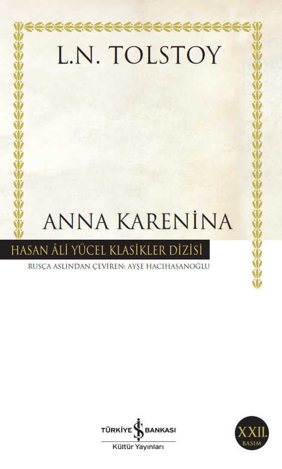
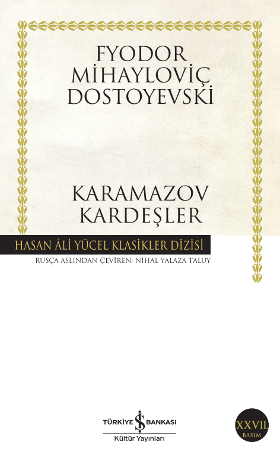
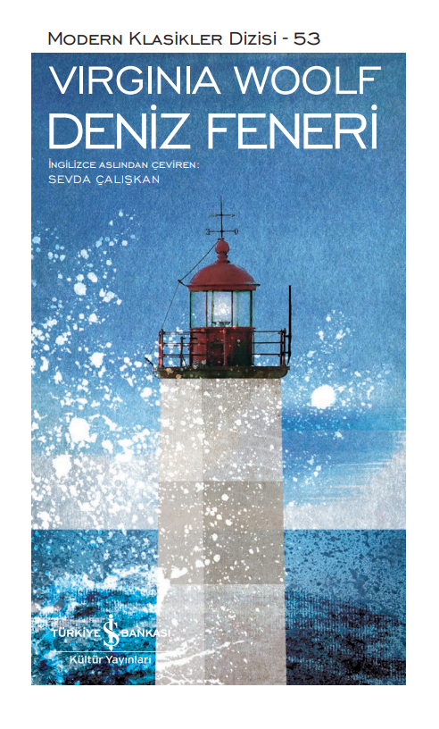

-

Anna Karenina
Lev Nikolayeviç Tolstoy (1828-1910): Savaş ve Barış, Diriliş ve Kreutzer Sonat‘ın büyük yazarı, sadece toplumsal olayları değil, bireyin duygularını da olağanüstü tasvir yeteneğiyle aktarmıştır. Yazar, en ünlü eserlerinden biri olan Anna Karenina’da evlilik, aşk ve ölüm konularını derin bir gözlem gücüyle ele almış, muhteşem edebi dehasıyla işlemiştir. 1875-1877 yılları arasında Ruskiy Vestnik dergisinde tefrika edilen romanın ilk baskısı 1878’de yapılmıştır. Pek çok yazar ve eleştirmen Anna Karenina’yı gelmiş geçmiş en büyük roman saymaktadır. Tolstoy’un Anna Karenina eseri birçok kez sinemaya da uyarlanmıştır.
Ayşe Hacıhasanoğlu (1952): DTCF Rus Dili ve Edebiyatı bölümünü bitirdi. Bir süre SSCB Büyükelçiliği Basın Bürosu’nda çevirmen olarak çalıştı. Edebiyat ve sosyal bilimler alanında çeviriler yaptı. Dostoyevski, Tolstoy, Turgenyev, Gorki, Bagirov eserlerini Türkçeye kazandırdığı yazarlar arasında yer almaktadır.
Lev Nikolayeviç Tolstoy (1828-1910): Anna Karenina, Savaş ve Barış, Diriliş’in büyük yazarı, yaşamının son otuz yılında kendini insan, aile, din, devlet, toplum, özgürlük, boyun eğme, başkaldırma, sanat ve estetik konularında kuramsal çalışmalara da verdi. Bu dönemde yazdığı roman ve öykülerinde yıllarca üzerinde düşündüğü insanlık sorunlarını edebi bir kurguyla ele aldı.
-

Karamazov Kardeşler
Fyodor Mihayloviç Dostoyevski (1821-1881): İlk romanı İnsancıklar 1846’da yayımlandı. Ünlü eleştirmen V. Byelinski bu eser üzerine Dostoyevski’den geleceğin büyük yazarı olarak söz etti. Ancak daha sonra yayımlanan öykü ve romanları, çağımızda edebiyat klasikleri arasında yer alsa da, o dönemde fazla ilgi görmedi. Yazar 1849’da I. Nikola’nın baskıcı rejimine muhalif Petraşevski grubunun üyesi olduğu gerekçesiyle tutuklandı. Kurşuna dizilmek üzereyken cezası sürgün ve zorunlu askerliğe çevrildi. Cezasını tamamlayıp Sibirya’dan döndükten sonra Petersburg’da Vremya dergisini çıkarmaya başladı, yazdığı romanlarla tekrar eski ününe kavuştu. Karamazov Kardeşler Dostoyevski’nin son başyapıtıdır.
Nihal Yalaza Taluy (1900-1968); Cumhuriyet’in ilk kuşağının önde gelen Rusça çevirmenlerindendir. Dostoyevski ve Tolstoy’un yanı sıra Puşkin, Gogol ve Turgenyev çevirileriyle de yaygın olarak okunan Taluy’un çeviri külliyatı otuz kitabı aşmaktadır.
-

Deniz Feneri
İngiliz edebiyatının başyapıtlarından biri olan Deniz Feneri, son derece basit olay örgüsünün ardında yaratıcısının özyaşamının ayrıntılarını, toplumsal meselelere ilişkin sorgulamalarını, içgözlemlerini ve derin felsefi gizemleri barındırır. Deniz Feneri ’nin merkezinde I. Dünya Savaşı’nın öncesinde ve sonrasında İskoçya’nın Skye Adası’ndaki evlerinde kalan Ramsay ailesi ve konukları vardır. Çocuklar oynarken, yetişkinler sohbet eder, düşüncelere dalar ve keşiflerde bulunur. Yapıtın roman türünde alışık olduğumuz anlatı sürekliliğini kesintiye uğratan yapısı ve her bir anlatıcının kendi bilinç akışının perspektifiyle çözülen olay örgüsü, bir deniz fenerinin kendi ekseni etrafında dönen ışığını andırır. Böylece Ramsay ailesinin sıradan gündelik yaşamı zaman, ölüm, toplumsal cinsiyet ve ahlak üzerine derin düşüncelere gömülür.
VIRGINIA WOOLF (1882-1941): Roman türüne özgün katkılarda bulunmasının yanı sıra döneminin önemli eleştirmenlerinden biri olan Virginia Woolf, Londra’da doğdu. Eğitimini eleştirmen olan babası Sir Leslie Stephen’dan aldı. İki dünya savaşı arasındaki dönemde, Londra’nın edebi çevrelerinin yanı sıra İngiliz yazar, filozof ve sanatçılardan oluşan Bloomsbury grubunun üyeleri arasında da önemli bir şahsiyet haline geldi. 1912’de Leonard Woolf’la evlendi ve 1917’de birlikte Hogarth Yayınevi’ni kurdular. Mrs. Dalloway ve Deniz Feneri gibi çığır açan romanların yazarı olan Woolf, daha sonra tarihsel bir fantezi olan Orlando’yu ve I. Elizabeth döneminden 1928’e değin İngiltere’deki edebiyat yaşamını konu aldığı uzun denemesi A Room of One’s Own’u (Kendine Ait Bir Oda) yayımladı. Bilinç akışı tekniği üzerine yoğunlaştığı The Waves’i (Dalgalar) daha geleneksel bir roman olan The Years (Yıllar) izledi. Yazar son romanı Between the Acts’i (Perdeler Arasında) bitirdikten sonra ruhsal bunalım sonucu kendini evinin yakınındaki bir ırmağa atarak yaşamına son verdi.